🔎 Mapa Interactivo de Batallas Históricas

Batalla de Grunwald
Campos Cataláunicos
Batalla de Poitiers
Batalla de Azincourt
Navas de Tolosa
Batalla de Hastings
Batalla de Lechfeld
Batalla del Puente de Stirling
Batalla del Aqueloo
Caída de Constantinopla
Batalla de Nicópolis
Caída de Acre